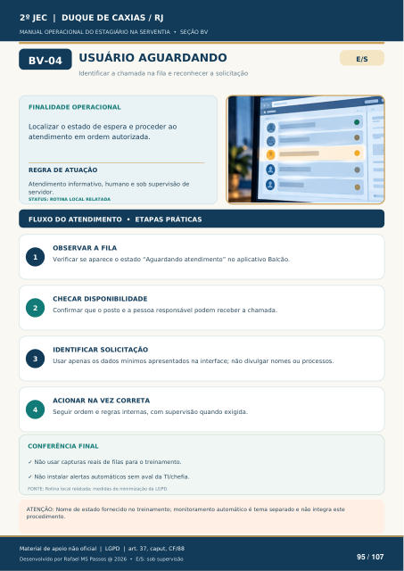

USUÁRIO AGUARDANDO
Identificar a chamada na fila e reconhecer a solicitação
FINALIDADE OPERACIONAL
Localizar o estado de espera e proceder ao atendimento em ordem autorizada.
REGRA DE ATUAÇÃO
Atendimento informativo, humano e sob supervisão de servidor.
STATUS: ROTINA LOCAL RELATADA
FLUXO DO ATENDIMENTO • ETAPAS PRÁTICAS
OBSERVAR A FILA
Verificar se aparece o estado “Aguardando atendimento” no aplicativo Balcão.
CHECAR DISPONIBILIDADE
Confirmar que o posto e a pessoa responsável podem receber a chamada.
IDENTIFICAR SOLICITAÇÃO
Usar apenas os dados mínimos apresentados na interface; não divulgar nomes ou processos.
ACIONAR NA VEZ CORRETA
Seguir ordem e regras internas, com supervisão quando exigida.
CONFERÊNCIA FINAL
Não usar capturas reais de filas para o treinamento.
Não instalar alertas automáticos sem aval da TI/chefia.
FONTE: Rotina local relatada; medidas de minimização da LGPD.
ATENÇÃO: Nome de estado fornecido no treinamento; monitoramento automático é tema separado e não integra este
procedimento.
Ver também o infográfico original (página 95)
